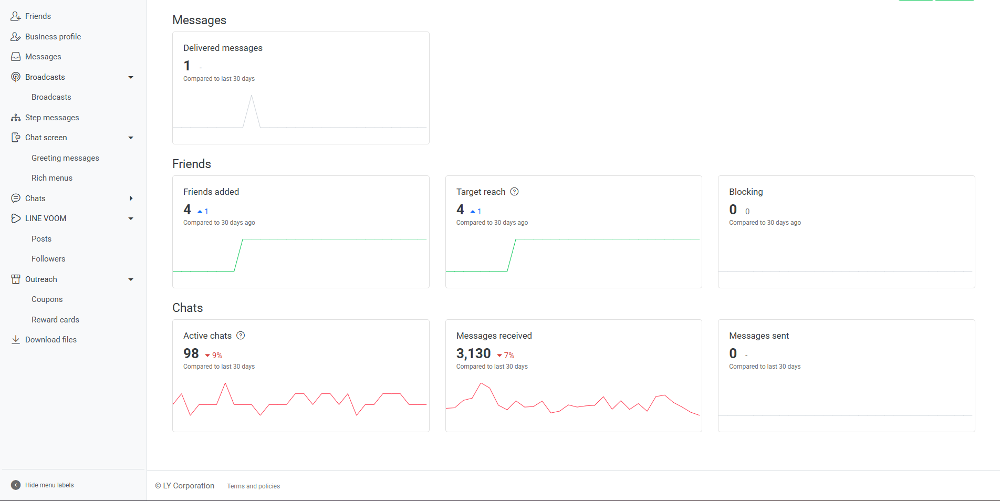
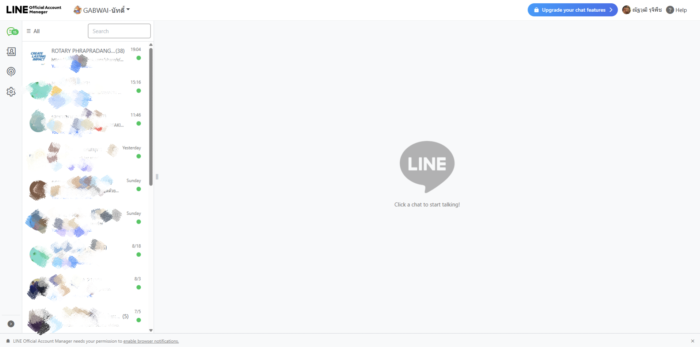
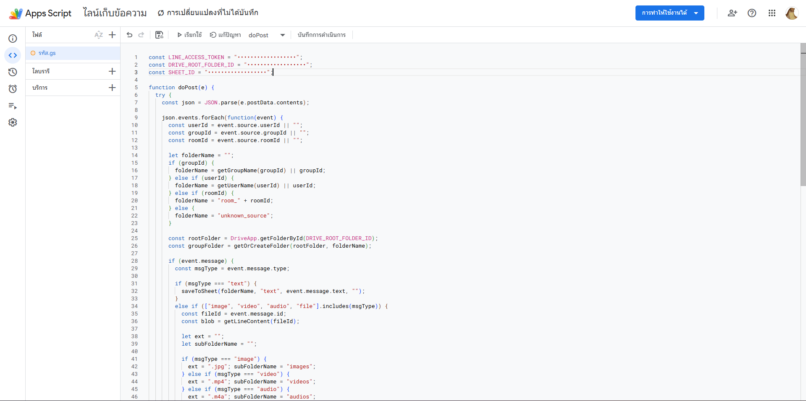

LINE User
ผู้ใช้ส่งข้อความหรือไฟล์เข้าบัญชี LINE Bot
ระบบ LINE Bot สำหรับรับข้อความและไฟล์จาก LINE แล้วจัดเก็บข้อมูลลง Google Drive และ Google Sheets โดยอัตโนมัติ
function doPost(e) {
const json = JSON.parse(e.postData.contents);
json.events.forEach(...);
}
ผมออกแบบและพัฒนาระบบที่เชื่อม LINE Messaging API เข้ากับ Google Apps Script เพื่อรับข้อมูลจาก LINE แล้วแยกประเภทข้อมูลก่อนจัดเก็บอย่างเป็นระบบ
ระบบรองรับข้อความ รวมถึงไฟล์ประเภทภาพ วิดีโอ และเสียง โดยจัดเก็บลงโฟลเดอร์ตามแหล่งที่มาของข้อความ
ผู้ใช้ส่งข้อความหรือไฟล์เข้าบัญชี LINE Bot
ส่ง Event แบบ JSON ไปยัง Web App
ประมวลผล Event และแยกประเภทข้อมูล
จัดเก็บลง Google Drive / Google Sheets
รับ Event และข้อมูลจากการสนทนา
ทำหน้าที่เป็น Webhook และ Backend
จัดเก็บไฟล์ที่ผู้ใช้ส่งเข้ามา
จัดเก็บข้อมูลข้อความและรายละเอียดที่เกี่ยวข้อง



ออกแบบโครงสร้าง Webhook, เขียน Google Apps Script, จัดการข้อมูลจาก LINE และเชื่อมต่อระบบจัดเก็บข้อมูล เพื่อให้กระบวนการทำงานเป็นอัตโนมัติ